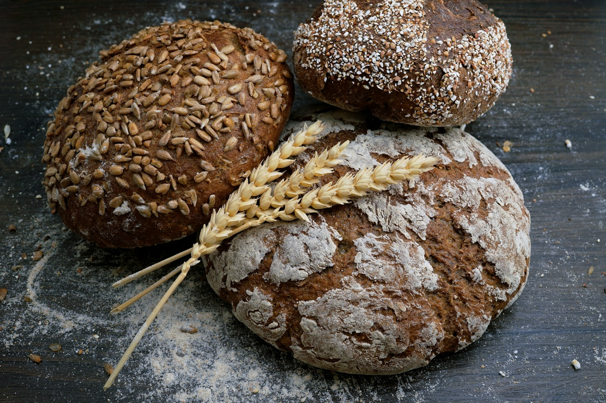

Breads
A homemade loaf for the table. Contact the bakery for the current selection and availability.
A LITTLE TASTE OF FLORENCE
Breads, pies, pastries and pasties at Michaela May's Bakery, on Central Avenue in Florence, Wisconsin.
308 Central Avenue · Florence, WI

SWEET, SAVORY & SIMPLE
The bakery’s public listings feature homemade breads, pies, pastries and pasties. Ask the team what’s available today.
A homemade loaf for the table. Contact the bakery for the current selection and availability.
Something on the sweeter side. Explore the bakery’s Facebook page for updates from the team.
A savory bakery favorite. Ask directly about fillings, quantities and pickup arrangements.
ON CENTRAL AVENUE
Find Michaela May's Bakery at 308 Central Avenue, Florence, Wisconsin 54121.
Check current opening hours and availability with the bakery before travelling.
Open mapCustom orders are available. Contact the team to discuss your request, timing and pricing.
HAVE SOMETHING IN MIND?
For custom orders, current bakes or a question before you visit, reach the bakery through its published contact details.